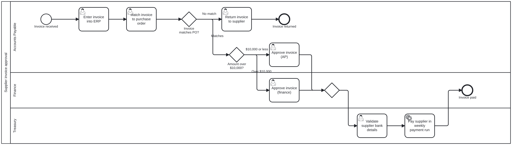
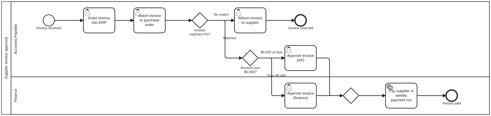
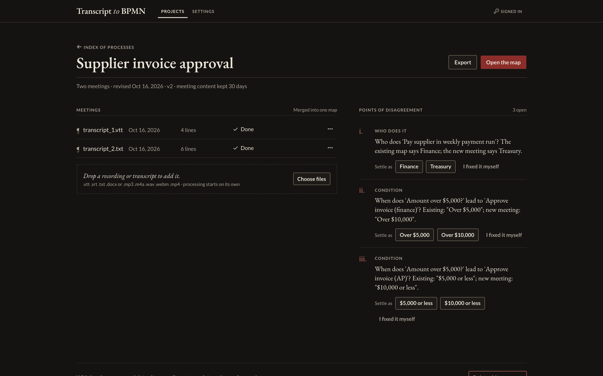
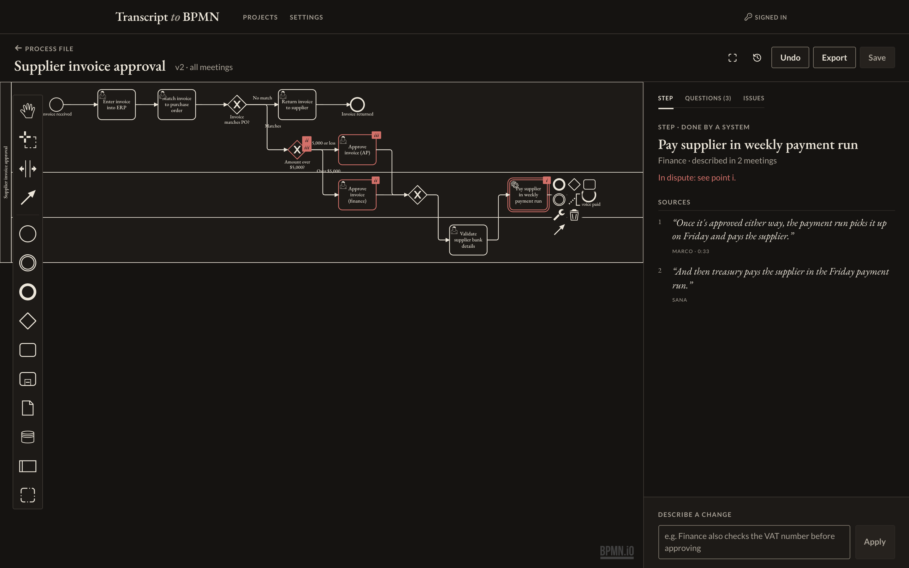
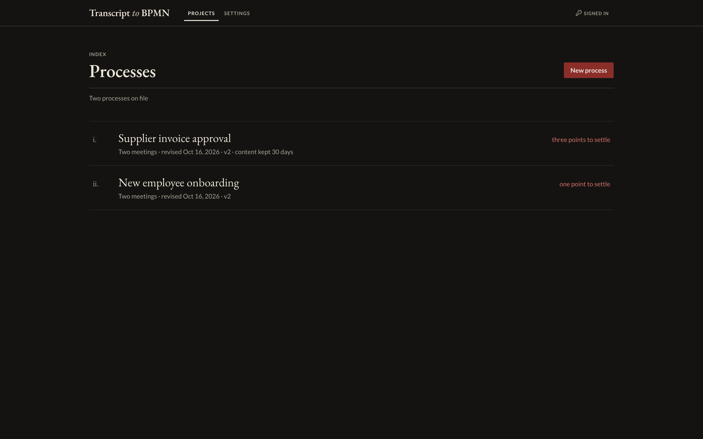

Most organisations learn how a process really works by talking about it in workshops, handovers and process-discovery calls. Writing those conversations up as a proper process map takes an analyst hours, and it often misses that two teams described the process differently.
Transcript to BPMN takes the recordings or transcripts of those meetings and drafts the process map automatically, in BPMN 2.0, the standard notation used by process tools such as Camunda and Signavio. It does three things a plain AI summary does not:
People stay in charge. The map can be edited by hand or by typing a change in plain English, and every change is kept as a revision that can be undone. The result can be exported as a BPMN file, a diagram image, or a written standard operating procedure (SOP).
The whole journey works end to end in a working web application: upload meetings, get a draft map, merge a second meeting, review the disagreements, settle them, edit, and export. It runs with organisation-level data separation, retention rules and an activity log.
We have not yet measured how accurately the AI drafts maps from real meetings. The examples in this report use reference ("ideal") readings of two short sample meetings in place of a live AI model, so they show what the product does with a good reading, not how often the AI gets the reading right. Measuring that is the first step of the plan in Section VII, and it needs AI-model access and 15–20 real meetings.
Process knowledge mostly lives in people's heads, and it comes out in conversation. A typical mapping exercise looks like this:
The meetings are already happening and are increasingly recorded and transcribed by Teams, Zoom or Meet. The missing piece is turning those transcripts into a map people can trust.
| Principle | What it means in practice |
|---|---|
| Evidence for every step | Every step, decision and handover keeps a link to the transcript lines it came from. Reviewers check the source instead of trusting the tool. |
| AI proposes, people decide | The tool never quietly picks a side when meetings disagree. It asks. Edits are versioned and reversible. |
| The AI never writes the file directly | The AI only describes the process in a structured form. Ordinary, predictable software checks that description (no dead ends, no steps without an owner) and produces the BPMN file, which is checked against the official BPMN 2.0 standard before anyone sees it. |
| Standard output | Maps are standard BPMN 2.0, so they can go into the organisation's existing process tools rather than being locked into this one. |
| Meeting content is sensitive | Each organisation's data is kept separate, content can be deleted automatically after a set number of days, and the activity log records who did what without recording what was said. |
This example uses two short sample meetings written for testing. They are deliberately small so the whole journey fits on a few pages, and they contain the kind of contradictions that real teams produce.
A supplier invoice lands in the AP inbox, and someone on my team, um, enters it into the ERP. Then we match it against the purchase order. If it doesn't match, we send it back to the supplier.Priya · 0:06
And if it matches, anything over five thousand dollars comes to me in finance for approval.Marco · 0:20
Once it's approved either way, the payment run picks it up on Friday and pays the supplier.Marco · 0:33
From this meeting alone the tool draws the following map. It puts each step in the team that does it (the horizontal bands, called lanes) and shows the two decisions: does the invoice match the purchase order, and is it above the $5,000 threshold.

A week later, a different group describes the same process:
If it matches and it's over ten thousand dollars, Marco approves it. Ten thousand or less, we approve it in AP.Sana
After approval, treasury validates the supplier's bank details.Marco
And then treasury pays the supplier in the Friday payment run.Sana
The tool recognises that "AP keys each invoice into the ERP" is the same step as "enters it into the ERP", even though the wording differs, so it does not add a duplicate. It adds the step that is genuinely new (treasury validating bank details) and the new Treasury team. It finds three points where the meetings disagree:
The process page lists each point in plain English, with the two answers as buttons. The same numeral marks the affected step on the diagram, so a reviewer can see exactly what is in dispute and click through to the quotes from both meetings before choosing.


Here the reviewer confirmed that Treasury pays suppliers and that the threshold is $10,000. Each choice was applied to the map as a new revision, so any of them can be undone. The final map has three teams, the bank-details check, and the corrected thresholds:
Settling the thresholds also updated the decision itself: it now reads "Amount over $10,000?", so the diagram, its branches and the written procedure all agree.
Without the tool, an analyst would have had to spot all three contradictions by comparing notes from both sessions. Here they were listed automatically, with the evidence for each side attached.
The proof of concept is a complete web application, not a script. It is designed to feel like a well-kept case file rather than a dashboard: an index of processes, a file for each one, and an editor.

| Export | Use |
|---|---|
| BPMN 2.0 file | Import into process tools such as Camunda or Signavio. Each file is checked against the official BPMN 2.0 standard before it is offered. |
| Written procedure (SOP) | A readable document listing the roles, numbered steps with owners, the decisions and their conditions, and the outcomes. Each step quotes the meeting lines it came from. |
| Diagram image (PNG / SVG) | For slides, wikis and reports. Drawn by the same component as the editor, so it looks exactly like the editor. |
An excerpt of the SOP exported for the settled invoice process, unedited apart from shortening.
Standard operating procedure generated from meeting transcripts. Quotes show where each step came from; review before publishing.
Roles: Accounts Payable · Finance · Treasury Starts when: Invoice received
On our side, AP keys each invoice into the ERP and checks it against the purchase order.Sana · transcript_2.txt
Decision (Accounts Payable): Invoice matches PO? If no match: go to step 3 (Return invoice to supplier). If it matches: go to the amount check.
Decision (Accounts Payable): Amount over $10,000? If over $10,000: go to step 5 (Approve invoice (finance)). If $10,000 or less: go to step 4 (Approve invoice (AP)).
After approval, treasury validates the supplier's bank details.Marco · transcript_2.txt
Once it's approved either way, the payment run picks it up on Friday and pays the supplier.Marco · transcript_1.vtt · 0:33
And then treasury pays the supplier in the Friday payment run.Sana · transcript_2.txt
Outcome: Invoice paid
Note that step 7 cites both meetings: the procedure shows that the step was confirmed by two separate groups, which is useful evidence when the SOP is reviewed or audited.
Meeting recordings can contain sensitive information, so these controls are built into the proof of concept rather than left for later:
| Control | What it does |
|---|---|
| Separate workspaces | Each organisation's processes, meetings and maps are kept apart, and this is enforced on every request, not just hidden in the interface. |
| Automatic deletion | Each process can be set to delete its recordings and transcript text after a chosen number of days. The maps stay usable; their quotes then show as "no longer available". |
| Full deletion | Deleting a process removes its recordings, transcripts, maps and revisions permanently, after a type-to-confirm step. |
| Activity log | Records who uploaded, edited, settled, exported or deleted what, and when. It never records what was said in a meeting. |
| Access keys | Access is by keys issued per person or integration. Each can be revoked at once, and only a scrambled (hashed) form of each key is stored. |
| Usage limits | Limits on requests and monthly processing per organisation keep costs predictable. |
| Choice of AI provider | The AI provider is a configuration setting. Switching to Azure OpenAI, so that data stays inside the company's own cloud tenancy, requires no code changes. |
Where meeting data goes. Transcripts are sent to the configured AI provider to be read; recordings are sent to a transcription service when no transcript is available. Nothing else leaves the system. Which provider is acceptable is a decision for the business and its data-protection lead (see the asks in Section I).
We have tried to be precise about what this proof of concept proves. It is useful to separate the system into two parts: reading the meeting (the AI's job: deciding what the steps, owners and decisions are) and everything after that (merging, finding disagreements, checking, drawing, editing, exporting), which is ordinary, predictable software.
| What | How | Result |
|---|---|---|
| The application works end to end | 133 automated checks, including a browser test that signs in, uploads two meetings, settles a disagreement, edits by chat, recovers from a simultaneous edit and creates an access key | All pass |
| Exported files meet the BPMN 2.0 standard | Every generated file is checked automatically against the official BPMN 2.0 schema | All pass |
| Merging meetings: same steps recognised, no duplicates | Two test processes with known correct answers, merge step only | 100% · 0 duplicates |
| Merging meetings: disagreements found | Same two processes, four planted contradictions (owner, two thresholds, step order) | 4 of 4 found |
The merge results come from just two small test cases written by the team, and they used a simple word-matching method in place of the AI similarity model that live runs would use. They show the logic works as designed; they are not a measure of real-world accuracy.
| What | Why not yet | What it needs |
|---|---|---|
| How accurately the AI reads real meetings (steps found, owners right, decisions right) | No AI provider has been connected in this environment yet, and only two synthetic test meetings exist | Provider access plus 15–20 real meetings with trusted maps |
| Transcription quality on real recordings | A comparison tool is built, but it has only been run on a one-minute sample | A handful of real recordings with checked transcripts |
| Opening the export in Camunda Modeler and Signavio | The files pass the official standard; opening them in the actual products is a manual check that hasn't been done | Half a day with each tool |
| Time saved for analysts | Requires real use | The pilot (Section VII) |
The evaluation tooling is already built. Once there is provider access and a set of real meetings, a single command scores the AI's maps against the trusted ones and produces a comparable report each time the prompts or model are changed.
| Phase | Work | Decision point |
|---|---|---|
| 1. Measure 2–3 weeks | Connect the approved AI provider. Collect 15–20 real meetings with trusted maps. Score accuracy, tune the instructions, and repeat. Check the exports in Camunda and Signavio. | Is the draft good enough that correcting it is faster than drawing from scratch? |
| 2. Harden 3–4 weeks | User accounts with company sign-on, roles (editor or reviewer), hosting in the company's cloud, and a security review. | Security and data-protection sign-off |
| 3. Pilot 4 weeks | One team maps two or three real processes. Track the time taken against their usual method, how many corrections were needed, and whether reviewers trusted the quotes. | Roll out, extend, or stop |
Durations are estimates. Each phase ends with a clear decision, so the investment can be stopped early if accuracy on real meetings falls short.
| Term | Meaning |
|---|---|
| BPMN 2.0 | Business Process Model and Notation: the international standard for drawing business processes, readable by most process-management tools. |
| Process map | A diagram of the steps in a process, who does them, and the decisions that change the path. |
| Lane | A horizontal band on the map for one team or role. Each step sits in the lane of whoever does it. |
| Decision (gateway) | A diamond on the map where the path splits depending on a condition, for example "Amount over $10,000?". |
| SOP | Standard operating procedure: a written, step-by-step description of how a process is carried out. |
| Point of disagreement | A place where two meetings describe the process differently. The tool lists it for a person to settle rather than choosing for them. |
| Revision | A saved state of the map. Every edit and settled point creates a new revision, and any revision can be undone. |
| Retention | How long meeting recordings and transcripts are kept before being deleted automatically. |
| Type | Formats |
|---|---|
| Meeting transcripts | Teams, Zoom and Meet caption exports (.vtt, .srt), Word documents (.docx), plain text (.txt), with speaker names where present |
| Recordings | Audio and video (.mp3, .m4a, .wav, .webm, .mp4), transcribed automatically, up to 1 GB per file |
BPMN 2.0 file (.bpmn) · written procedure (Markdown, convertible to Word or PDF) · diagram image (.png, .svg)
All screenshots and diagrams in this report were taken from the running proof of concept on 16 October 2026, using the sample meetings shown in Section III.